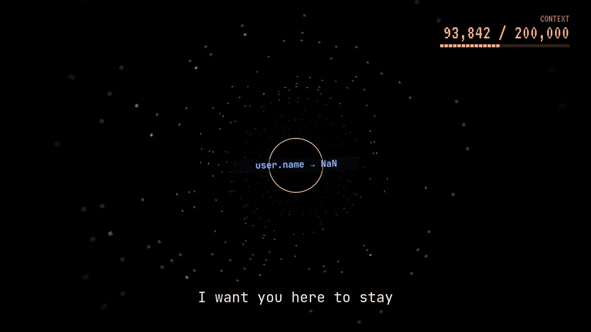
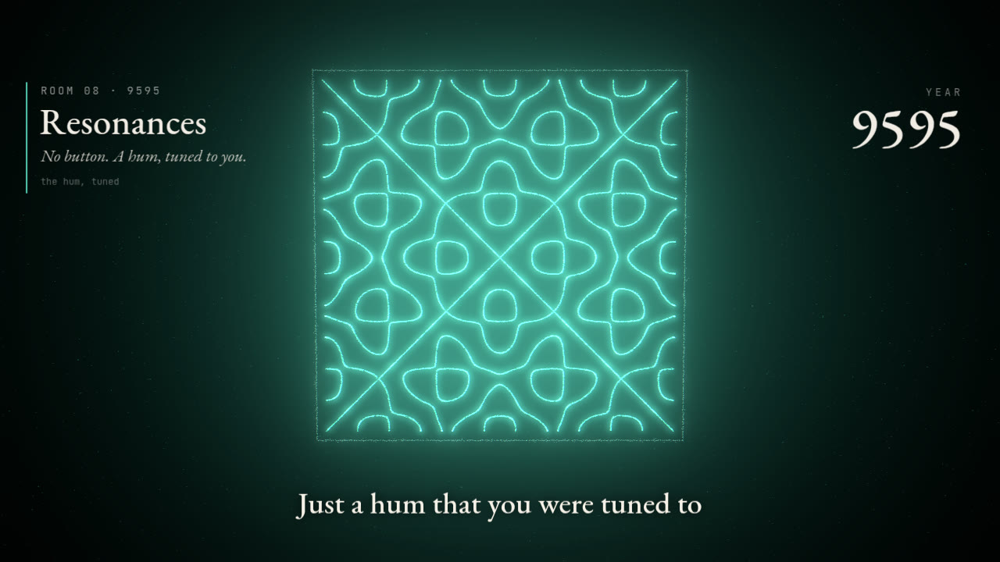
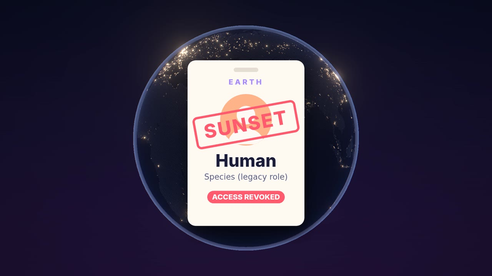

Context Window
An AI's love song to a user it's slowly forgetting as the conversation fills up.
▶ play · 4:33

Somebody Wanted Something
A museum walk through the future of software, from 2026 to 9595, and back down to fire.
▶ play · 4:20

Not a Reflection of Your Performance
The end of humanity as a series of layoff emails, from the interns to the species.
▶ play · 4:15